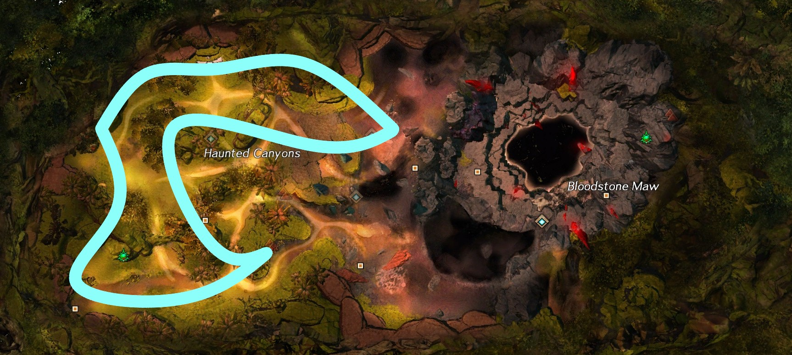
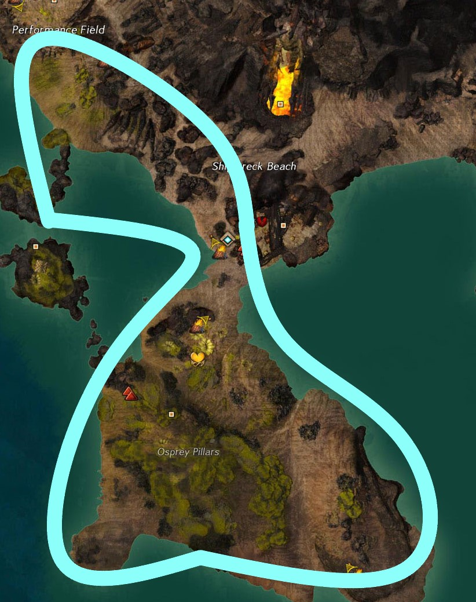
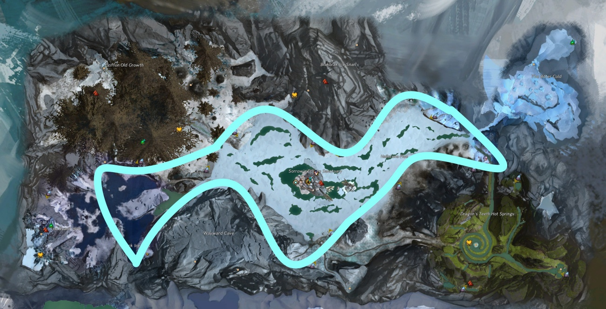
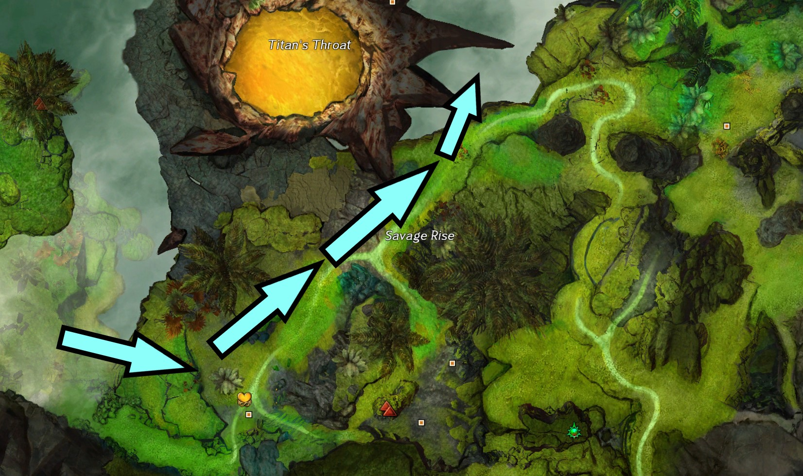
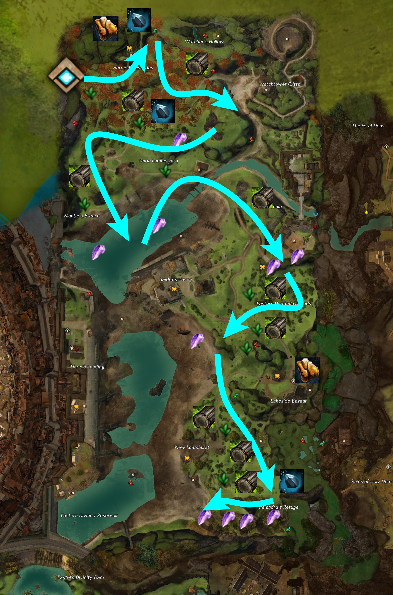
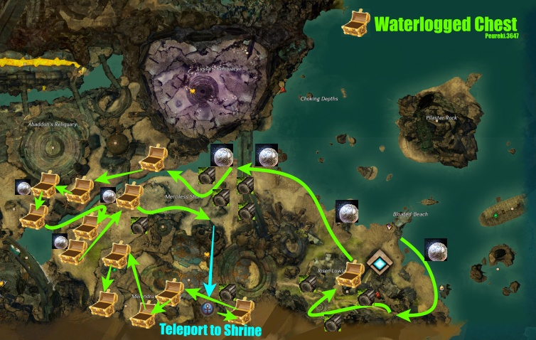

Potential Gold Per Hour
| Farm | Benchmark | Time |  |
 |
|---|
Disclaimer:
In order to receive materials such as variental herbs and quality meats, you need to have completed at least the Charr and Sylvari portion of the Gourmet Training achievement. These materials play a significant role in benchmarks that includes them.
Spreadsheet
To find averages, specific loots, and more, check out the spreadsheet.
Node Farm Calculator
While this farm uses specific Glyphs, check out the Node Farm Calcaulator to test out the estimated profits with different Glyphs. What are displayed in the benchmarks are not neccessarily the best Glyphs to use for maximum profits.
In order to receive materials such as variental herbs and quality meats, you need to have completed at least the Charr and Sylvari portion of the Gourmet Training achievement. These materials play a significant role in benchmarks that includes them.
Spreadsheet
To find averages, specific loots, and more, check out the spreadsheet.
Node Farm Calculator
While this farm uses specific Glyphs, check out the Node Farm Calcaulator to test out the estimated profits with different Glyphs. What are displayed in the benchmarks are not neccessarily the best Glyphs to use for maximum profits.
| Soulkeeper's Airship Waypoint [&BEsJAAA=]
Drop straight down to the ground level. There will be lots of herbs, wood, and ores. |
 |
| Castaway Circus Waypoint [&BHgJAAA=]
Southwest from the waypoint, there will be a section full of trees and plants. |
 |
| Sorrow's Eclipse Waypoint [&BH0JAAA=]
Not necessarily nodes, but chests. Need to have the Ancient Magics mastery "Koda's Flame". Use Braizers to grab a torch to open chests. |
 |
| Mariner Landing Waypoint [&BL0JAAA=]
Head upward towards the Flax farm, but on the way, there are lots of nodes |
 |
|  | |
| Red Leaf Retreat Waypoint [&BK8JAAA=] |  |
| Camp Reclamation Waypoint [&BO8JAAA=]
Highly recommended to have the southeast Shrine unlocked. These act like waypoints. This is obtained by talking to an NPC at the shrine after a meta and exchanging some Orrian Pearls. |
 |

 Patreon
Patreon  Paypal
Paypal